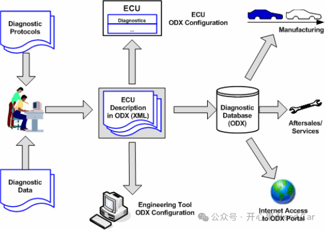
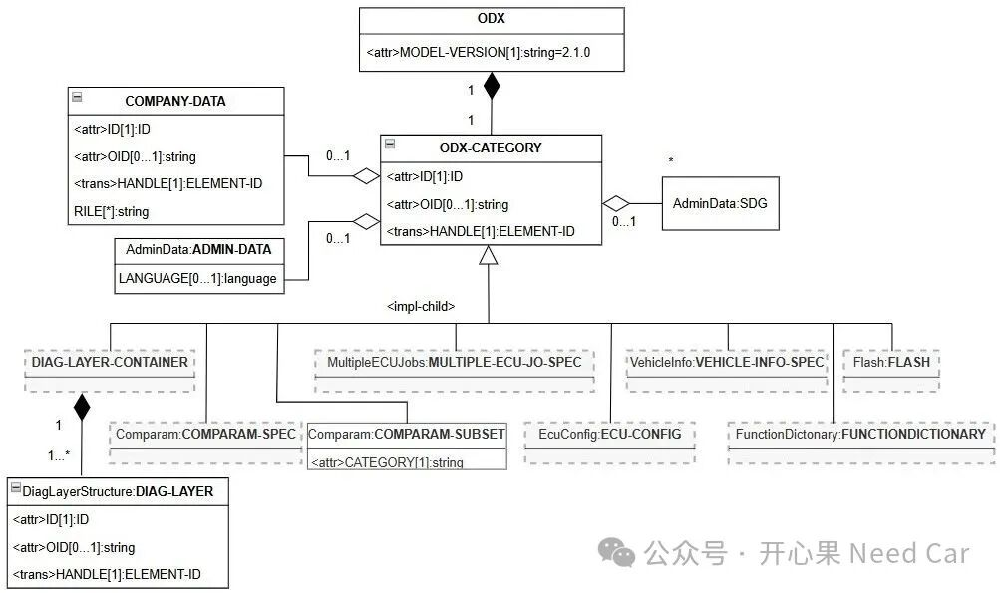
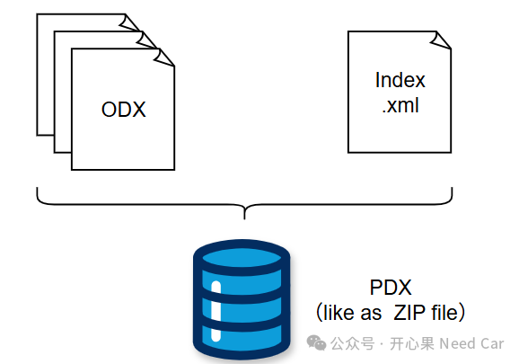

开心果 Need Car · 2025-08-08T06:32:00+08:00 · 微信原文
做诊断的小伙伴，时常听到ODX（Open Diagnostic Data Exchange）和PDX（Packed Diagnostic Data Exchange），这俩是什么呢？又有什么关系呢？
1、ODX规范简介
ODX 是由 ASAM（Association for Standardisation of Automation and Measuring Systems） 组织最初定义和编纂的一项标准，旨在建立一种统一的诊断数据模型，用于描述车辆及其电子控制单元（ECU）中的诊断信息。该规范确保在车辆和 ECU 的整个生命周期中，诊断数据交互格式具有机器可读、标准化和重用的特点。简单说，ODX是一种标准化的诊断数据描述格式。
ODX的首个版本为2.0.1，随后发布了2.1.0和2.2.0等版本。在2008年，ODX 2.2.0被ISO（国际标准化组织）采纳，正式纳入国际标准，编号为ISO 22901-1。目前，行业中大多数企业采用ODX 2.2.0作为标准规范，当然，也少数OEM厂商仍在使用较早的ODX 2.0.1版本。
ODX规范通过UML（Unified Modelling Language）图来描述数据，数据交互格式使用XML（Extensible Mark-up Language）。ODX规范定义的诊断数据包含：
用于ECU诊断通信的协议规范数据；
用于ECU诊断通信的不同协议层和数据链路层的通信参数；
用于ECU刷写的数据；
相关车辆的接口（eg：连接器和引脚定义）；
ECU网络诊断能力的功能描述；
ECU配置数据（Variant Coding）等。
如下图，可以看出在ECU整个生命周期中，工程、制造、售后、服务等都可以应用ODX数据。当前ODX数据文件主要应用于车辆的生产制造和售后阶段。

2、使用ODX文件的优势
如今随着整车上ECU数量的增多，更多的OEM开始使用ODX数据来描述ECU和整车的诊断数据。那么，ODX文件带来了哪些优势呢？主要优势体现在如下几个方面：
ODX数据文件机器可读，即：可以在不同工具链交互 ；
确保ECU生命周期各个阶段的ODX数据同源性；
减少了跨部门重复编辑ODX数据文件工作量；
统一的ODX数据模型，可为不同诊断工具开发提供统一标准；
可以避免重复开发诊断工具等。
3、ODX文件结构
ODX结构如下所示：

（一）DIAG-LAYER-CONTAINER
主要用来描述和诊断服务相关的数据，如定义支持的诊断服务；定义诊断服务的请求、响应报文格式；定义DTC以及相关的数据；定义诊断服务所用到的数据类型等。
DIAG-LAYER-CONTAINER被定义在ODX-D文件中。
（二）COMPARAM-SPEC
用于定义ECU与诊断工具之间通信参数。用来描述预先定义的通信参数集组成的协议栈（如：UDSonCAN、UDSonIP）。通信参数定义在COMPARAM-SUBSET中，eg:物理层、传输层、应用层的时间参数、通信地址信息等。在ODX的XML文件结构中，COMPARAM-SPEC通常位于PROTOCOL层下，例如：
<PROTOCOL><COMPARAM-SPEC><COMPARAM><KEY>Baudrate</KEY><VALUE>500000</VALUE></COMPARAM><COMPARAM><KEY>MaxMessageLength</KEY><VALUE>4096</VALUE></COMPARAM></COMPARAM-SPEC></PROTOCOL>
COMPARAM-SPEC被定义在ODX-C文件中。
（三）VEHICLE-INFO-SPEC
通常用于描述与车辆相关的信息，eg：车型、OEM信息等。它还可以描述整车拓扑，车辆Connector，车辆的PHYSICAL-VEHICLE-LINK和LOGICAL-LINK。
VEHICLE-INFO-SPEC被定义在ODX-V文件中。
（四）FLASH
用来描述和ECU刷写序列有关数据，eg：诊断服务和Job，使用的刷写数据，刷写ECU的Memory layout等信息。FLASH被定义在ODX-F文件中。
（五）ECU-CONFIG
用来描述ECU或车辆生产时的数据，ECU的功能在很大程度上取决于某辆车的配置，如车辆的高、中、低配。为了减少ECU Variant的数量，需要执行ECU Configuration。ECU-CONFIG描述了几个用例和相应的数据模型功能。
（六）MULTIPLE-ECU-JOB
用于同时对多个ECU执行编程、验证、诊断等操作。
（七）FUNCTION-DICTIONARY
以功能为导向来定义诊断数据。
4、PDX
PDX文件就是多个ODX文件的打包文件，本质是一个Zip格式的封装文件。Index.xml文件用来描述PDX文件包含文件的文件名，示意如下：

ODX数据的交互通常使用PDX文件，所有需要交互数据的文件封装在一个PDX文件中。PDX文件可以包含不同类型的ODX文件，如：odx-c，odx-cs，odx-d，odx-e，odx-f，odx-fd，odx-m，odx-v。
PDX文件包含的数据对象不限于ODX数据文件、文本文件、图片，它可以包含任何格式的文件，eg：*.Jar文件。
两者区别如下：
ECU诊断服务、DTC、DID 等 | 多个ODX文件及相关资源 | |
描述ECU的诊断能力 | 交付和部署诊断数据包 |
往期精彩回顾